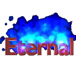
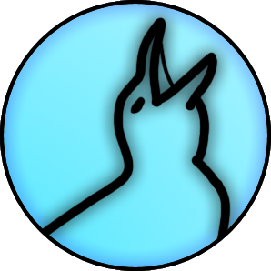
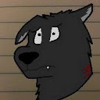
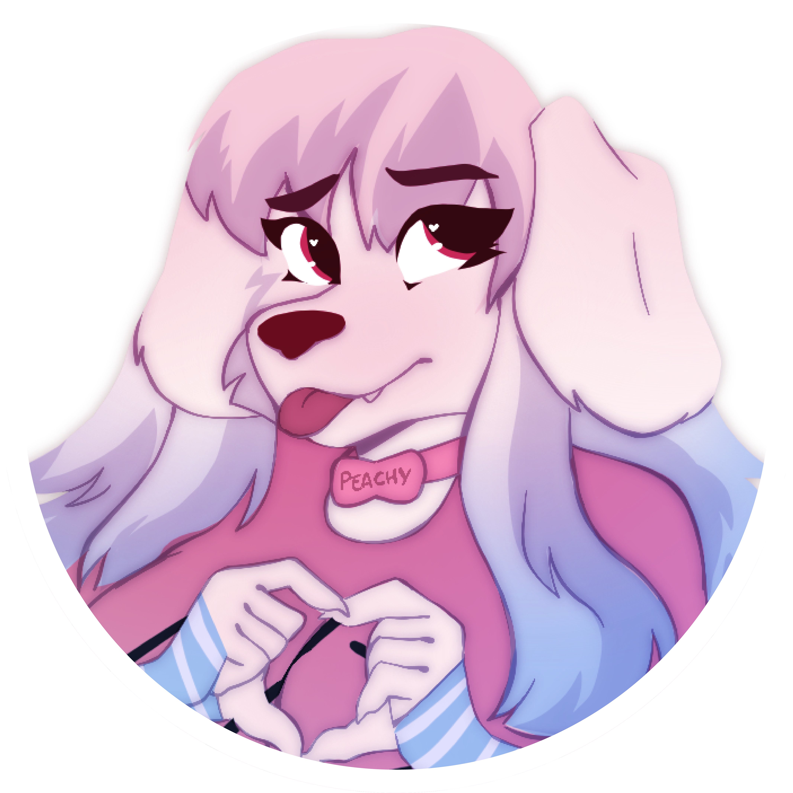
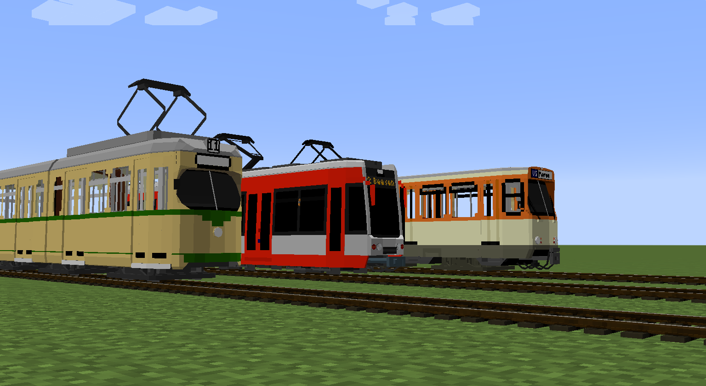

ABOUT TRAINCRAFT
Traincraft first released April 2011. At that time it was named "Train and Zeppelin mod" and only had one steam locomotive and one cart.
The locomotive had no GUI and you couldn't attach the cart to the locomotive. The first idea was to have a controllable powered minecart.
The mod got so much support that it was decided to continue the adventure, many more locomotives and carts were added over time.
As time went on Spitfire4466 and Mr. Brutal could no longer maintain the mod and eventually opened it up for the community to maintain.
Now Traincraft has a a constantly expanding number of locomotives, rollingstock, and decorative blocks, made by both the new dev team and the community.
The community has been the biggest driving force of the mod. From artists making new trains and stock, to regular players providing creative and motivating ideas.
More recent development has put a lot of focus on the community, from improving the gameplay, to adding support for content creators to make their own content as add-ons.
TC was always a very unique mod, and even with 4+ other active train mods, it's still unique, and we believe that, alongside being backed by one of the most devoted and kind communities in minecraft is what makes it strong.
Join the discord and become a part of the growing community!
https://discord.gg/SgpnCnK
THE TEAM
Spitfire4466
(Retired)
Mr. Brutal
(Previous Lead Dev)

Eternal Blue Flame
(Lead Dev)

Broscolotos
Green PC
Chielmeiberg

Riggs 64
(RWC Lead)

Peachy
(MTC Dev)
Bidahochi
(FoxTC Lead)
Honorable Mentions
Spitfire4466
The OG. Sinced moved on from minecraft modding, spitfire was the original mind behind the mod.
Check out his newer ventures here: http://www.sr-prod.com/
Mr. Brutal
Another OG, Mr. Brutal joined on sometime into the early development of the mod and helped make a lot of revolutionary changes.
he's sinced moved on from minecraft modding, and about all we have is his youtube.
https://www.youtube.com/@a7bf6
Eternal Blue Flame
The current lead dev. And the one writing this entry!
Juggling full time work, half dozen other hobbies, and taking care of Traincraft, but I always make time for the community, y'all are what keeps me going.
You can always find me in the Discord or on the GitHub, feel free to message me even if i'm not online.
https://github.com/EternalBlueFlame
The only social I really use is insta, so feel free to hit me up there @eternal_blue_flame
Once TC's state is more reliable and 1.12 is finally supported, I'll be getting to work on my own content pack with a focus on community requests. I'm not talented enough to do TC's artstyle.
Check out my patreon as well, I have some of my other projects over there, I really need to update it more.
I need to get any of those projects to useable states.
Any support is also appreciated, I dream to one day work on code as my full-time job.
https://www.patreon.com/EternalBlueFlame
Broscolotos
Check out my other projects:
https://github.com/broscolotos
Support me:
Paypal
Green PC
One of our lead artists.
Twitter: https://x.com/GreenPolishCat
BlueSky: https://bsky.app/profile/greenthepolishcat.bsky.social
Chielmeiberg
One of our lead moderators. BlueSky:https://bsky.app/profile/chiel.uk
Peachy
The brilliant and unfocused mind behind MTC.
Check out their website at: https://peachmaster.dev/
Riggs64
Our longest-running server owner, RWC has been a huge part of the TC community in every way you can imagine.
Check out his youtube https://www.youtube.com/channel/UCeuiI4KYaHlbrASCvdEssYg
And check out the RWC server/modpack on Technic
https://www.technicpack.net
Bidahochi
The lead behind FoxTC, a custom built version of TC with it's own content and features. Often those features end up in the official branch.
Also lead of the BAP add-on. Check out their discord https://discord.gg/QZp59fq
And their patreon https://www.patreon.com/bidahochi
Honorable Mentions
TheDoctor1138
Here by their own request, but they have done a lot for the code end of TC, and are one of the few that really understand the inner-workings.
Youtube https://www.youtube.com/channel/UC-ZU2ppLKMb7VDSK-0Q3FFg
Github https://github.com/TheDoctor1138
TEBA
From control cars to a number of animations, they have made a number of additions to the mod, alongside other mods. Github https://github.com/RealTBEA
Krankerbusfahrer
They've done a lot of testing for both the add-on API and the mod itself.
Their "Trams-in-Motion" add-on is still in development.

Chazi898
The lead for another one of our bigger servers.They also have their own add-on in the works.
Youtube https://www.youtube.com/@ChazsTrains
Mainline Project Server Discord https://discord.gg/TGeraGdt5k
B.I.P add-on discord https://discord.gg/N89rzdcAsK